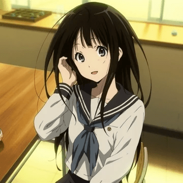
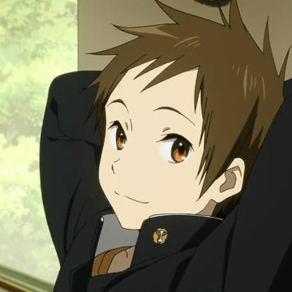
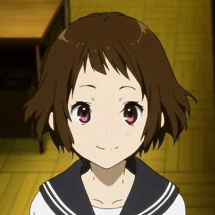

Characters

Hotaro Oreki (折木 奉太郎Oreki Ho:taro: ) is a not very energetic boy who joined the school's
classics club at the request of his sister in order to prevent it from closing.

Eru Chitanda (千 反田 える Chitanda Eru ) is a curious girl who is the president of the club.
She is polite and kind, but also frivolous and energetic.

Satoshi Fukube (福部 里志Fukube Satoshi ) is Hōtaro 's classmate and only friend who joins the club with him.
He has a very good memory, which he calls a "database".

Mayaka Ibara (伊原 摩耶花 Ibara Mayaka ) is the fourth member of the Classic Literature Club. I quickly bonded with Eru.